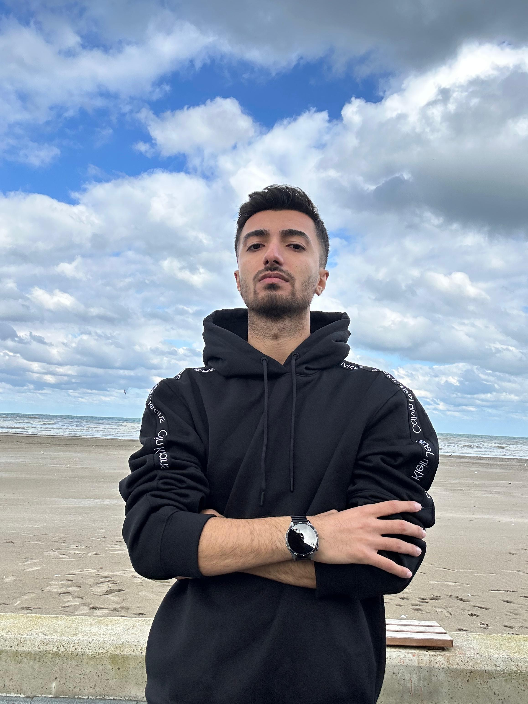
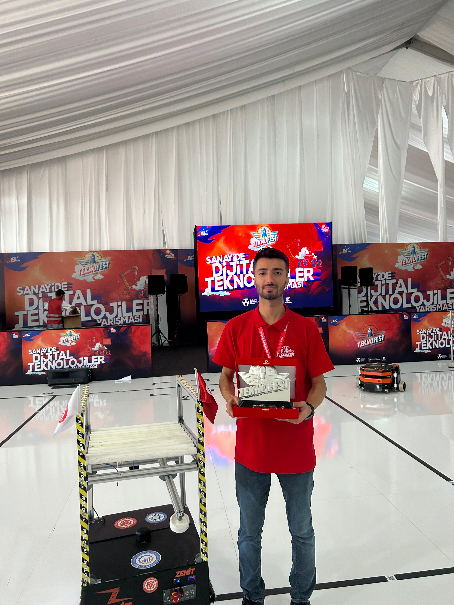
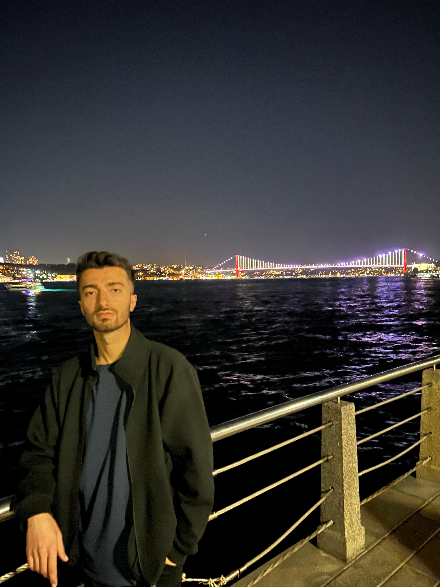
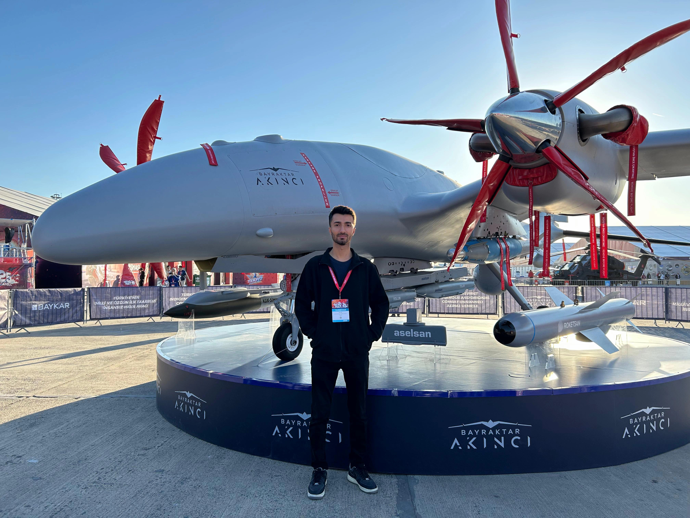
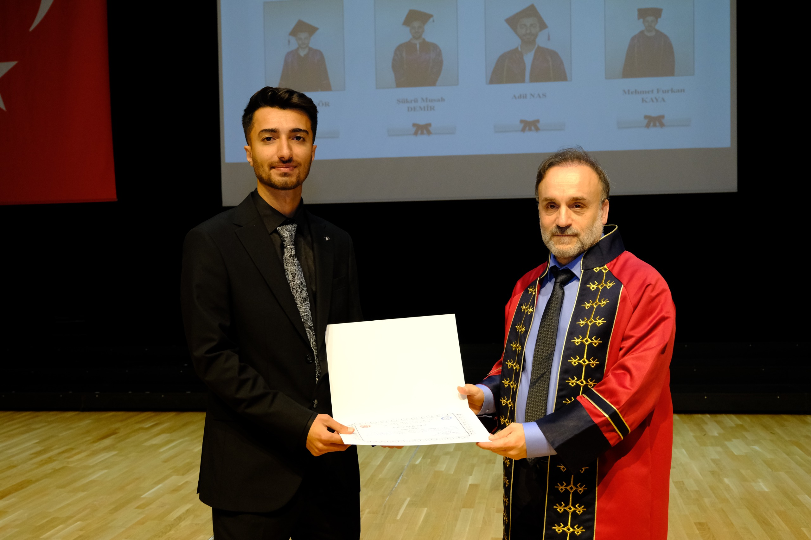
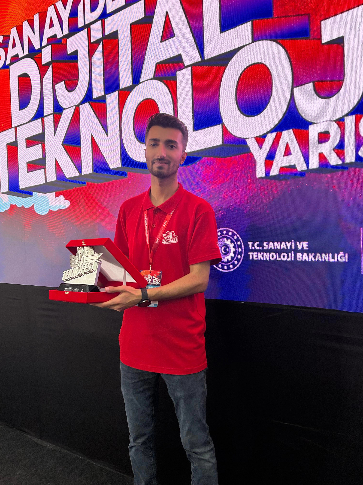

Robotik ve yapay zekanın kesişiminde yazılım geliştiriyorum. ROS2, SLAM ve otonom sistemler üzerine çalışıyor; makine öğrenmesini gerçek dünya problemlerine uygulamaktan keyif alıyorum.






Bilgisayar Mühendisi (YZ & Robotik), lisansımı onur derecesiyle tamamladım. Sivas Cumhuriyet Üniversitesi'nde Bilgisayar Mühendisliği alanında Yüksek Lisans yapıyorum. Yazılım geliştirme, robotik ve otonom sistemlere duyduğum tutkuyla sürekli yeni teknolojiler öğrenmeye çalışıyorum.
Teknofest "Sanayide Dijital Teknolojiler" yarışmasında (İleri Kategori) üniversite ekibimi yönettim; otonom robotumuzla Türkiye 2.'si olduk. Projenin tüm ROS2 yazılımını, SLAM ve otonom navigasyon sistemlerini geliştirdim.
Samsung Innovation Campus'ta Yapay Zeka eğitimi tamamladım. Makine Öğrenmesi, Derin Öğrenme ve LLM orkestrasyon araçları (Ollama, CrewAI, LangChain) konularında kapsamlı deneyim kazandım.
Profesyonel deneyimlerim ve büyük projelerde edindiğim kazanımlar.
Gerçek problemlere gerçek çözümler. İşte en çok gurur duyduğum projelerim.
Raspberry Pi 4/5 ve ROS2 Humble ile geliştirilen otonom güdümlü araç. SLAM tabanlı haritalama, engel kaçınma ve kısıtlı bölge tespiti özellikleri içeriyor. Teknofest'te Türkiye 2.'si.
Raspberry Pi 4/5 ve kamera ile kara çizgiyi takip eden mobil robot. Roboflow ile eğitilmiş ML modeli sayesinde çizgi ayrışmalarını tespit ederek yön belirliyor.
C-Prot stajında Tauri + Svelte + Rust ile geliştirilen tam yığın masaüstü uygulaması. Dosya arama, kötü amaçlı yazılım tespiti ve sertifika tarama algoritmaları içeriyor.
Yıllar içinde ustalık kazandığım araçlar ve teknolojiler.
Sürekli öğrenme yolculuğumda edindiğim uluslararası sertifikalar.
Birlikte çalıştığım insanların değerli görüşleri.
Proje fikrinizi tartışmak veya sadece merhaba demek için bana ulaşın.